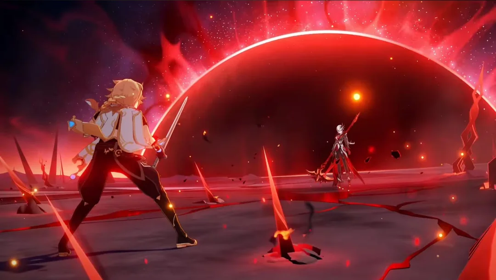

I guess I main Pyro now?
Written , a 5 minute read
I was looking at the teams I mostly use recently and somehow in Fontaine I mostly use Pyro? This is really weird for me since for the most time I really didn't have any Pyro DPS build or even on the account. However, in Fontaine I head some luck with wishes for Lyney and Arlecchino (both without constellations but with signatures), and my default Navia team is with Xiangling and Bennet.
This post is mostly a look at my account before Natlan. I don't think that before Fontaine finishes I could squeeze major changes, maybe 2 more characters built. I really want to fully explore Fontaine and polish characters that I already have while getting good at gameplay. That makes this a good point to look at my account and how it get to the current form.
If I had any doubts
If I had any doubts to identify as Pyro main, the last event of 4.7, the "Specially-Shaped Saurian Search", gave opportunity to fight with really strong opponents. I struggled a lot with the first challenge - Sky-Searing Pyro Regisvine, due to the fact that all my teams that do any kind of real damage are based on Pyro or not very suited for the challenge.
Finishing Fontaine
I really feel like the Fontaine chapter is ending. For the first time I might get 100% for the region while it was coming - Fontaine exploration makes me happy. This is especially big for me, since the first 100% of any region - Mondstad - I also did during Fontaine.
As for characters I might pull for Clorinde but I'm not sure. Her design is definitely appealing and her attacks strike me with their elegance. However, maybe better would be to utilize characters that I already have and wait for her rerun - will see.
As for 4.7 events - Windtrace was quite fun since I was doing it with my girlfriend. Doing it solo would be more annoying, for me Genshin is single player game mostly. The Itto musical events felt strangely rushed, especially with that cliffhanger from Miko and Ei about the war at the end. The story also felt like it can use some work. But the gameplay was superb. Both the classical rhythmic game, which was a little bit overwhelming for me and note matching minigame that was really cosy and relaxing after the chaos of rhythmic game.
Remuria
I forget while writing this post that in this release we got Remuria (and Bayda Harbor I guess). This update got us really all over Teyvat.
I only finished main Remuria world quest and traverse it a bit to unlock every teleport. To my surprise, they really nailed both quest and location this time. I don't really like Chasm, having fun there only while in Archon Quest. It was Definitely interesting but only few spread moments when you see something weird like talking mushrooms, Inverted City and Celestial Neil. Enkanomiya was mostly a chore for me (lore wise it has some interesting stuff but so much noise was in this quest). So seeing Remuria (aka Sea of Bygone Eras) this good was great news.
Remuria not only is really pretty from every angle, it has really captivating atmosphere similar to Atlantis or Journey to the Center of the Earth. Concepts that are so core to our culture that in recent years several blockbusters used them (Kong x Godzilla movies, Aquaman). Additionally mixed with the more fantastic element of magical books, mythical underwater beasts, talking cats and magic songs this was the definition of an adventure. You know that world quest in Genshin is good when you read almost all of the dialogues.
Not only Hoyo added nice story, lore and views - we have yet another Local Legend that encorouges keeping distance for it, making it nice test for bow characters (ironic that the same patch we got Arlecchino which discorouges bow characters) and multi target damage test arena with timed infinite vishaps challenge. Good job!
Story quests
WHY DO THEY RELEASE ANIMATION BEFORE THE STORY QUEST. I get it, they had to get hype for Arlecchino (which I was part of) but this shredded any mystery from Arlecchino story quest. Skipping this, it was good, Arlecchino beeing always two step before us was great characterization. My problem is, as with other story quests, that I really would like to spend more time with her as her, not her as part of her backstory.
As for Cyno story quest it was on average Genshin level - good, wholesome and with nice drops of lore. The missing part for me was environment - when we land in Temple of Silence, THE library on King Deshret civilisaion and have 0 loot to gather, not a single book, not a single page I was so dissapointed. I understand that Hoyo has a certain rythm that they must keep at all costs but it makes game worse, with this dry, berren lands like the temple and Bayda Port. I cannot stress this enough - we got ancient library in the game where major portion of lore is passed via books and don't have any book in this library accessible for us. I hope that this is only the case because we have really filled next patch seeing the trailer but it may all be in empty halls, just like in this one. Will see.
Side note: Kaveh and Alheitam in this update didn't have toxic moments, we also got more parenting between Cyno and Tighnari and Collei, this update was all about ships and parenting, great stuff.